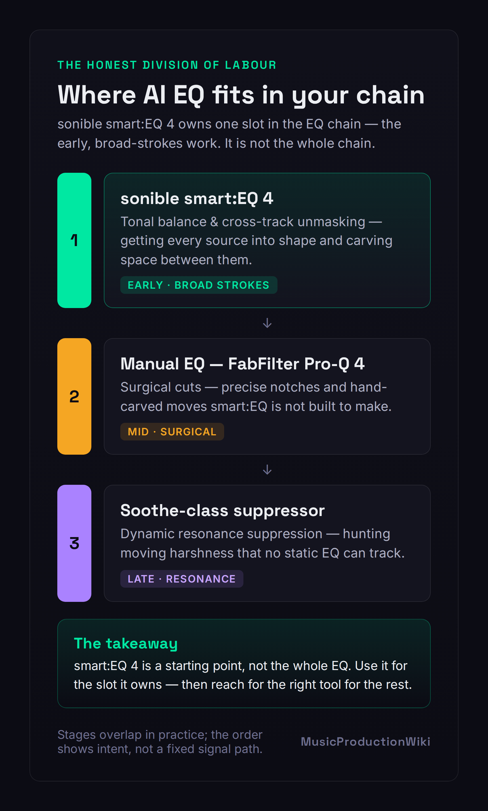
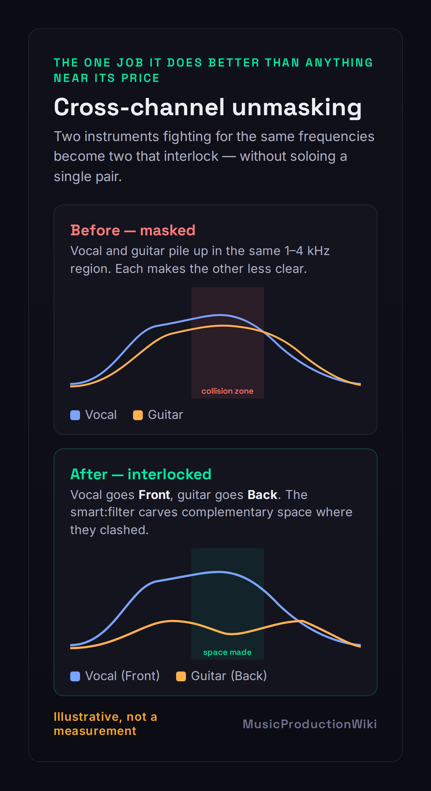
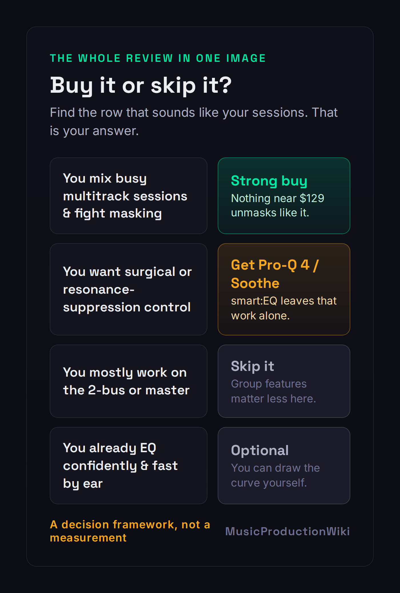

Every other review of this plugin tries to sell you the same fantasy: that an AI EQ will mix for you. Drop it on a track, hit the button, get a finished sound. That is the lie, and it is the reason so many producers buy smart:EQ 4, feel briefly clever, and never actually get better at mixing. So let us be honest from the first line. sonible smart:EQ 4 will not replace knowing how to EQ — and the reviews pretending it will are doing you real harm. What it will do is take two genuinely tedious jobs off your hands and do them faster than you can by ear. The question worth answering, the one no listicle bothers with, is whether those two jobs are worth $129 to you.
smart:EQ 4 is an AI-assisted EQ built around a smart:filter that auto-balances a track to a chosen Profile and, crucially, untangles spectral masking across up to ten tracks at once with a drag-and-drop Front/Middle/Back hierarchy. That cross-channel unmasking is the thing it does better than anything else near its price — FabFilter Pro-Q 4 has no equivalent. It is also a competent standard EQ with dynamic bands, mid/side and a sleeper feature in Auto Gain. But it is a starting point, not the whole EQ: it has no spectral-resonance suppression, no per-band sidechain, and a documented habit of over-boosting the extremes. Buy it if you mix busy multitrack sessions and fight masking. Skip it if you mostly master, want surgical control, or already EQ confidently by ear.
The Verdict
The best group-aware unmasking workflow at this price, on a genuinely capable everyday EQ — a real time-saver and a fair teacher, as long as you audit its curves instead of trusting them.
| Sound quality (transparency of moves) | 8.7 | |
| Cross-channel / unmasking workflow | 9.3 | |
| Speed to a usable tonal balance | 9.1 | |
| Manual / surgical control depth | 8.0 | |
| Versatility (replace a standard EQ?) | 8.4 | |
| Value (vs price & vs Pro-Q 4) | 8.5 | |
| Who it’s for clarity | 8.8 |
Scored on sonible's published specifications, the smart:EQ 4 manual and documentation, and the consensus of hands-on reviews and long-term sonible users — not a first-party bench test of its processing. We have not measured smart:EQ 4's before/after on our own source files for this review, so every sonic claim here is framed as craft judgment, and the spectral diagram below is clearly labelled as illustrative rather than a measurement. Prices verified against sonible.com, Plugin Boutique and FabFilter on June 22, 2026; sonible discounts often, so confirm the current price before you buy.
What smart:EQ 4 Actually Is (in Plain Language)
Strip away the marketing and smart:EQ 4 is two tools sharing one window. The first is an ordinary, capable parametric equalizer — bands you can place, shape, sweep and switch into dynamic mode, with mid/side processing and a good analyzer. The second, the part people pay for, is the smart:filter: an AI engine that listens to your signal, compares it to a target you choose, and draws a corrective EQ curve to move the track toward that target. That is the whole trick. It is not magic and it is not mixing. It is a very fast, pattern-trained guess at "what does a balanced version of this sound like," and the quality of that guess depends entirely on the target you point it at.
You set that target with a Profile. smart:EQ 4 ships with a deep roster of them: Profiles for individual instruments and vocals, a Universal option when you are not sure, and — new and genuinely useful — genre-based Mix Profiles trained on entire finished mixes, meant for a bus or master. You can also drag in any audio file as a reference track and have the smart:filter learn its spectral character as a custom target, which is the closest thing here to "make my vocal sit like that record." Pick the Profile, let it analyse, and you have a starting curve. If you want to understand what that curve is even trying to do, our primer on what EQ actually is in music production is the foundation everything here sits on.
The smart:filter runs in three modes, and knowing them is most of using the plugin well. Track balances the single channel it sits on. Group leaves that channel's tone alone but reduces the masking between it and other group members. Track and Group does both: balances the channel and makes it part of the unmasking conversation. That Group behaviour is where smart:EQ stops being a clever single-track gadget and becomes something genuinely different, so it gets its own section below. There is also a new Smoothing control for gentler curves and the option to cap how long the AI spends analysing — small touches, but they show the tool has matured.
The Honest Question First: Does AI EQ Replace Learning to Mix?
No. And the failure mode of pretending otherwise is specific and predictable, so let us name it. A producer buys smart:EQ 4, drops it on every channel, accepts every curve it draws, and ends up with a mix that is technically "balanced" and completely characterless — because balance is not the same as taste. The AI has no opinion about whether this vocal should be airy or intimate, whether this mix wants a fat low end or a tight one, what to sacrifice when the guitar and the synth are both shouting in the same octave. Those are the actual decisions of mixing, and the plugin cannot make a single one of them. It can only push toward an average. Lean on it as an autopilot and you outsource exactly the judgment you were supposed to be developing.

The honest framing is the one in the diagram above: smart:EQ 4 occupies a specific slot in the chain, not the whole chain. It is excellent at the early, broad-strokes job — getting each source into a sensible tonal shape and carving space between sources — and it is the wrong tool for the precise, surgical, end-of-chain jobs. Used that way, as a fast first pass that you then audit and refine, it is a real asset and, for a newer mixer, a surprisingly good teacher: watching which frequencies it pulls down on a muddy bus teaches you where mud lives faster than reading about it. If your mixes are consistently coming out muddy or harsh, smart:EQ 4 will show you the problem regions — but you still have to decide what to do about them. Treat the curve it draws as a suggestion from a knowledgeable assistant, not an instruction from a boss.
Where It Genuinely Shines: Cross-Channel Unmasking
This is the section that justifies the purchase, so here is the problem it solves. In a busy arrangement, instruments fight for the same frequency real estate — the vocal and the lead guitar both crowding 2–4 kHz, the kick and the bass both claiming 60–100 Hz. That overlap is masking: two sounds in the same band, each making the other less clear. Solving it by hand means soloing pairs, finding the clash, carving a dip in one source to make room for the other, and repeating across every conflict in the session. It is slow, fiddly, and exactly the kind of work that rewards patience over creativity. Our mixing EQ guide walks through the manual version; smart:EQ 4 automates the tedious middle of it.

Here is how smart:EQ 4 does it. You put an instance on each conflicting channel — up to ten in a group — and drag them into a Front, Middle or Back hierarchy. Front elements keep their space; lower-priority elements have their masking frequencies gently pulled back where they collide with something more important. The vocal goes Front, the rhythm guitar goes Back, and the guitar quietly steps out of the vocal's way in the exact regions where they clash, without you soloing a single pair. You can see and remote-control every instance from any one window, so the whole group becomes one decision instead of ten. The result, illustrated above, is two spectra that interlock rather than overlap. No standard EQ — not Pro-Q 4, not your stock plugin — offers anything like this group-aware, drag-and-drop hierarchy. If masking is a recurring fight in your sessions, this one feature can pay for the plugin. If you want to understand the conflicts it is resolving, our free frequency conflict detector visualises where your tracks are colliding.
It's Also a Real EQ — and Auto Gain Is the Sleeper Feature
Switch the AI off and smart:EQ 4 is still a perfectly serviceable everyday equalizer, which matters more than it sounds, because it means the plugin is not a one-trick novelty you load and unload. The standard bands are fully parametric and each can be put into dynamic mode with the familiar threshold, ratio, range, attack and release controls — so it doubles as a dynamic EQ for taming a peak that only flares on loud notes. You get global or per-band mid/side processing, both minimum and linear phase, and a strong multi-source analyzer that can overlay every instance in a group so you can literally see the masking you are resolving. It is a real EQ. For a sense of where it sits against the field, our roundup of the best EQ plugins places it among the dynamic and surgical options.
But the feature I would point a newer mixer to first is the quiet one: Auto Gain. When you EQ, you change loudness — boost and the signal gets louder, cut and it gets quieter — and louder almost always sounds "better" for the first few seconds whether or not it actually is. That is the single most common way producers fool themselves at the EQ stage. Auto Gain compensates automatically, matching the output level to the input so your before-and-after comparison is honest. That loudness-matched A/B is worth more to your development as a mixer than the entire AI engine, because it forces you to judge tone on tone, not on volume. It is the kind of guardrail that, used consistently, quietly turns guesswork into skill. If you are still mixing with stock plugins, building the habit of level-matched comparison is the highest-leverage thing you can take from this plugin even before you buy it.
smart:EQ 4 vs FabFilter Pro-Q 4: The Comparison You Actually Want
This is the matchup every search lands on, and almost every answer gets it wrong by treating it as a fight. It is not a fight, because the two plugins are good at different things, and once you see the axis they separate on, the buying decision stops being "which is better" and becomes "which problem do I have." Pro-Q 4 ($179) is the surgical specialist: 24 bands, a famously precise interactive display, and two things smart:EQ 4 simply does not have — spectral-dynamic processing, which triggers on specific frequencies inside a band when they cross a threshold and leaves the rest untouched, and per-band sidechain with external triggering. If your work is hand-carving exact cuts, taming a moving resonance, or ducking one band against another source, Pro-Q 4 is the better tool and it is not close. Our Pro-Q 4 review covers that depth in full, and the Pro-Q 3 vs Pro-Q 4 piece covers what changed.
smart:EQ 4 ($129) wins decisively on the other axis: group-aware unmasking and auto-balance speed. Pro-Q 4's Instance List lets you view other instances, but it has nothing like smart:EQ's drag-and-drop Front/Middle/Back hierarchy that actively carves complementary space across ten tracks. And for getting a source into a sensible tonal shape in seconds, the smart:filter is simply faster than placing bands by hand. So the honest verdict is the one even FabFilter-loyal reviewers reach: these are complements, not rivals. Pro-Q 4 is the scalpel; smart:EQ 4 is the traffic controller. The engineer fighting masking across a crowded session and the engineer carving a precise notch are doing different jobs, and plenty of professionals own both and use each for what it is best at. If you can only buy one, buy the one that matches the problem you face most often — and for most people early in their journey, fighting masking in busy sessions, that is smart:EQ.
Where It Falls Short
The honest weak points follow directly from what smart:EQ 4 is. First, and most important: there is no spectral-dynamic resonance suppression. When a harsh frequency rings and moves with a performance — the ice-pick on a bright vocal, the nasal honk that slides through an acoustic guitar — smart:EQ 4 has no equivalent to Pro-Q 4's spectral mode or to a dedicated suppressor like Soothe or Gullfoss. It can dip a band, but it cannot hunt a moving resonance the way those tools do. Second, no per-band sidechain trigger: you cannot make one band respond to an external source, which Pro-Q 4 can. Neither gap is a flaw exactly — they are simply outside this plugin's job — but if you assumed an "AI EQ" did everything, those are the two places it does not.
Third, the behavioural one: the auto curve leans toward boosting the extremes. A number of users report that on buses especially, the smart:filter is fond of lifting the lows and highs, and prefer to set those ranges by hand. This is less a defect than a discipline reminder, and it points at the single skill that separates people who get value from this plugin from people who get hurt by it: audit the curve. Look at what the AI drew, A/B it with Auto Gain on, and trust your ears over the suggestion every single time. The moment you start accepting curves without listening, the tool has stopped helping you and started replacing your judgment with an average. Keep an EQ cheat sheet nearby while you build the instinct, and use our EQ problem solver when you are not sure whether the curve it drew is solving the right problem.
smart:EQ 4 vs the smart:bundle: What to Actually Buy
sonible will offer you smart:EQ 4 three ways, and the upsell math is worth thirty seconds before you check out. The plugin alone is around $129. The vocal:bundle adds smart:deess and smart:reverb 2 for vocal-focused work. The full smart:bundle wraps in smart:limit, smart:reverb 2, smart:comp 3, smart:deess and smart:gate — six AI processors that, bought together, save a meaningful chunk versus buying them one by one. The temptation is to assume the bundle is automatically the smart buy because it "saves 40%." It only saves you anything if you would actually use those other plugins. A discount on a compressor you will never open is not a saving; it is spending more to feel thrifty.
So the rule is simple. Buy smart:EQ 4 alone if EQ and unmasking are the only jobs you want AI help with — which, for a lot of producers who already own compressors and reverbs they like, is the right call. Step up to the vocal:bundle if you cut a lot of vocals and would genuinely use AI de-essing and reverb. Go for the full smart:bundle only if you can look at that list of six and honestly say you would reach for at least three or four of them. And because sonible runs sales constantly — manufacturer-focus promotions routinely drop both the plugin and the bundles well below list — the real money move is to decide which tier fits your workflow now, then buy it the next time it goes on sale rather than at full price. Verify the current numbers on the vendor page; they move often.
Who Should Buy It, Who Should Skip It
Buy it if you regularly mix multitrack sessions and masking is a recurring fight — the cross-channel unmasking alone can justify the price, and nothing else near $129 does that job as well. Buy it if you want fast, sensible tonal starting points and the honesty of a loudness-matched A/B, and especially if you are early enough in your EQ journey to want a teacher with guardrails: used with the curve-auditing discipline above, smart:EQ 4 will make you better, not lazier. Newer producers building their first real mixes — the audience our best mixing plugins for beginners guide is written for — get unusually high value here, provided they treat it as a coach rather than a cheat.

Skip it if your work is surgical — precise notches, moving-resonance suppression, sidechained dynamic EQ — because Pro-Q 4 or Soothe will serve you better and you will find smart:EQ 4's strengths irrelevant to what you do. Skip it if you mix mostly on the 2-bus or master, where the single-channel and group features matter less and a broadband balancer like Gullfoss or a precise EQ is the better fit. And skip it if you already EQ confidently and quickly by ear: at that point the smart:filter is solving a problem you no longer have, and you are paying for a starting point you can draw yourself in the same time. The decision tree above is the whole article in one image — find your row and you have your answer.
The Verdict: Is smart:EQ 4 Worth $129?
For the producer it is built for — someone mixing crowded multitrack sessions, fighting masking, wanting fast tonal balance and an honest A/B — yes, comfortably, and the cross-channel unmasking is the reason. There is no other tool at this price that turns ten conflicting tracks into one drag-and-drop decision, and that workflow is the kind of compounding time-saver that earns its keep across a hundred sessions. For that person this is an easy 8.6 and an easy buy, especially on one of sonible's frequent sales.
For everyone else, the answer is "probably not at full price, and maybe not at all." If you want surgical control, the money is better spent on Pro-Q 4; if you want resonance suppression, on Soothe; if you mostly master, on a broadband balancer. And if you already EQ well by ear, smart:EQ 4 is a convenience, not a capability you lack. The plugin earns its score on the strength of one genuinely class-leading workflow and a thoughtful, capable EQ around it — but whether it earns your $129 comes down to a single question this whole review has circled: how often are your sessions actually crowded enough to need it? Download the 30-day trial, drop it across your busiest mix in Group mode, and the decision will make itself.
Try It Yourself: 3 EQ Exercises
These work in the smart:EQ 4 trial, or in any EQ you already own — the skill matters more than the brand.
- Load a single instrument and let the smart:filter draw a curve from its Profile.
- Before you accept anything, turn on Auto Gain and A/B the processed and unprocessed signal. Decide with your ears whether each move actually helped.
- Manually pull back any boost that does not serve the sound — especially in the low and high extremes. You have just done the one thing that separates a user from a dependant.
- Find two tracks that fight — a vocal and a lead, or a kick and a bass — and put a smart:EQ instance on each, in the same group.
- Drag one to Front and the other to Back, then switch the lower one to Group or Track and Group mode and listen as the masking clears.
- Now solo the pair and look at the analyzer overlay. Watch where the Back element stepped out of the Front element's way — that is the move you would have made by hand, done for you.
- On a source you know well, let the smart:filter balance it, then bypass it and try to match or beat that balance with manual bands and your ears alone.
- A/B the two, level-matched. Sometimes the AI wins, sometimes you do — both outcomes teach you something.
- Run both through our free Mix Fingerprint tool and compare the spectra. The goal is not to win; it is to learn to see what "balanced" looks like so you stop needing the suggestion.
Frequently Asked Questions
If you mix multitrack sessions and fight masking between instruments, yes. The cross-channel unmasking and fast tonal-balance starting points do genuinely tedious work in seconds, and at $129 it is the most accessible tool that does that job well. If you mostly work on a 2-bus or master, want surgical or resonance-suppression control, or already EQ confidently by ear, the value is much weaker. It earns its 8.6 on workflow and unmasking; whether it earns your $129 depends on how often your sessions are crowded.
smart:EQ 4 lists at around $129 / €129 / £109 and is sold by sonible direct, Plugin Boutique and Sweetwater. It is frequently discounted in manufacturer-focus sales (often near $89), with educational pricing and upgrade pricing from smart:EQ 3. Always verify the current price on the vendor page before you buy, as sonible runs sales often. A 30-day free trial is available.
They are not really competitors. Pro-Q 4 ($179) is the stronger surgical EQ and the only one of the two with spectral-dynamic resonance suppression and per-band sidechain. smart:EQ 4 ($129) is the stronger tool for group-aware cross-channel unmasking and fast auto-balance across a busy session, which Pro-Q has no equivalent for. The honest answer is which problem you have: hand-carving precise cuts points to Pro-Q; untangling masking across ten tracks points to smart:EQ. Many engineers run both.
No, and any review that implies it does is doing you harm. smart:EQ 4 gives you a fast, usually sensible tonal-balance starting point and untangles masking you would otherwise chase by hand, but it cannot make the creative calls: how bright this vocal should be for this song, how much low end this mix can carry, what to sacrifice when two parts fight. Treat it as a teacher with guardrails and a time-saver, not an autopilot. Always audit the curve it draws with your own ears.
The smart:filter is the AI core of the plugin. You pick a Profile (an instrument, vocal, genre Mix Profile, or a custom one learned from a reference track) and the smart:filter analyses the signal and draws a corrective curve to move it toward that target balance. It runs in three modes: Track (balances this channel), Group (leaves this channel but reduces masking against group members), and Track and Group (both). The Group mode, with a Front/Middle/Back hierarchy across up to ten instances, is the feature that sets smart:EQ apart.
Some users report that the auto curve leans toward boosting the low and high extremes, especially on buses, and prefer to set those by hand. It is not a flaw so much as a reminder of the core discipline: the AI proposes, you dispose. Always look at the curve it draws, trust your ears over the suggestion, and pull back boosts that do not serve the song. Auto Gain helps here by loudness-matching the before and after so a brighter result does not just trick you with extra level.
Buy smart:EQ 4 alone if EQ and unmasking are the only jobs you want AI help with. Step up to the smart:bundle (which adds smart:limit, smart:reverb 2, smart:comp 3, smart:deess and smart:gate) only if you would realistically use several of those processors, since the bundle saves money only relative to buying them separately. The vocal:bundle (smart:EQ 4 plus smart:deess and smart:reverb 2) is the middle option for vocal-focused work. Verify current bundle pricing on the vendor page, as it moves a lot in sales.
Yes. Underneath the smart:filter it is a competent standard equalizer with fully parametric bands that can each be switched into dynamic mode (threshold, ratio, range, attack, release), global or per-band mid/side processing, minimum and linear phase, Auto Gain and a strong multi-source analyzer. You can ignore the AI entirely and use it as a manual EQ, or use the smart:filter as a starting point and finish by hand. For purely surgical work, though, a dedicated EQ like Pro-Q 4 is more precise and faster to drive.